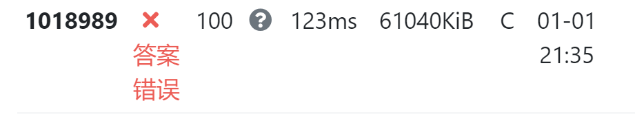

1 日
元旦就大摆特摆，数学一个字没看，悲，开了个不好的头。
这几天（感觉有几个星期了）右手手指弯曲时会疼痛，右手食指最为明显。我以为是骨折了什么的，毕竟常年睡觉食指堵耳（习惯侧右睡，因为右手本来就不适，侧右睡右手堵耳不用发力），但左手完全没事，还是很灵巧，即使左手是更常堵耳朵。而且如果是因为这个，为什么其它手指，哪怕小指也会（痛感食指 > 小指 > 拇指 > 中指，无名指好像不会）。然后我猜会不会是用鼠标键盘的原因，可是键盘的话两手工作量差不多，鼠标跟指位也不太一致。还想过有没有可能是冻伤，但左手又不会。搞不懂，别截肢了。
更新了一个以前写的脚本，是用来下载番剧的弹幕的。其实这有很多个轮子，没必要自己造，只不过我记得当时试了一下，大部分都不能下载港澳台的，没发现能用的，因此自己写了一个。
而弹幕下下来是 xml 格式的，我想要 ass 格式的，试过一些包或是外部，想要一条龙全部弄完，不过可惜的是不知道为什么输出会给截断，只有一部分会输出，试了好几个都是如此。因此只好用外部的弹幕盒子进行转换了，好在可以打包转换，能批量弄完一大批 xml，然后下载 ass 压缩包，也没多麻烦，就没必要折腾了。
而当时弄时没做错误处理，因为没遇上。而今天闲着（唉，就是不想学习）不知道怎地想去更新之前的弹幕，发现会报错了。于是就加上了错误处理。
更新后如下，隐去了可能暴露我倾向的部分注释：
1 | import requests |
此外，今天还添加了博客新板块——「 领域」，只不过是隐私板块，对标公博的「 记事」板块，同时移除了一个字没写过还一直置顶的私人记事板。趁着寒假期间，要多充实一下。
然后还改了部分板块的 Font Awesome 图标，现在看来更合适一点，下面是前后对比：
- 「 分类」 → 「 分类」
- 「 归档」 → 「 归档」
- 「 记事」 → 「 记事」
- 「 笔记」 → 「 笔记」
前几天 OJ 更新了前端，现在登陆不能直接点了，自动填充只填充了密码，没填充账户，导致我得手动多点一次账户框。而且感觉新 OJ 登陆界面变丑了，虽然整体是更好了。
此外，刚刚新 OJ 还加入了新功能，即使样例没过也会过一遍判例，于是……

手动添加了一个判断，判断是样例直接退出程序。
2 日
现在距离线代考试结束还有 20 分钟，而我已经在宿舍敲键盘了。
没想到这么简单，考前反而最担心线代（当然，要是寄了就当我没说）。
大概 75 分钟做完？具体不记得，反正检查过一遍要交卷时，监考人员说要至少考前半个小时，于是继续检查，还真多检查出错误。
虽然做得又快又顺，但错误还真不少，第一次检查还是发现不少错误，比如看错题什么的（要求正交变换没看到直接配方）。
没想到攻守之势异也，上次是微积分提前交卷，这次微积分奋战到最后一秒，悲。
微积分一道积分题，我考场时想好像跟前几年一道题一样（事实证明确实，只是稍微变了一下），而我记得我当时好像口算出来秒了，但这次死活算不出来，急死了，最后赌了一把把印象中那个答案写上去，考完 Wolfram Alpha 一算，居然对了，喜。
然后一个极限题，泰勒出来极限是 DNE，弄了好多遍，多展开几项都是这个结果，翻来覆去看了好多遍，屡次觉得会不会题出错了，想把一个 直接丢掉就有极限了。但还是遵照内心写了 DNE，用 Wolfram 看了确实不应该存在。不知道会如何，也可能是我眼瞎？反正折磨我挺久。
于是最后一题第二小问没做出来，不过跟时间应该也没关，又有绝对值，又是不等式，我还真不擅长。
真没想到，没有午睡休息，还有点饿考的线代，比微积分发挥好（当然我感觉是因为题目简单的原因）。
不过早上忘调闹钟了，早八的闹钟响了，所以微积分考时也挺困的。
好，去开摆了。尽量复习一下吧。
边刷边玩手机，导致平时半个小时，花了五十分钟才弄完，寄。而且背完身心俱疲，也不想复习别的了（其实又只是借口）。
3 日
寄，唯寄可以形容。
英语寄是我毫无波澜的，我英语几斤几两是有数的，高三也寄习惯，没啥所谓。当然，在背完 A 级词，B 级词背了差不多 1/3（指刷过卡片）的情况下，词汇选择题一大半看不明白也是绷不住的。
然后就是机试了，真是大寄：310/400，前三题满分，最后一题 10 分（拿了白送的 10 分）。无缘全部机试满分，悲。
详情现在不能展开，要展开就没时间复习马原了。等在飞机上再写吧，现在先把代码拷贝下来，截了个情况图。
但是简单谈一点还是可以的。首先又推迟十分钟，不知道为何。
然后，难以想象第一次机试的意外再次降临，只不过这次幸运女神没有眷顾我（或者说眷顾我太迟了），建议用时 20 分钟的第一题，我在离考试结束还有不到 30 分钟（29 分钟）才通过，可以想象我的心态有多炸裂了。
这题的原因确实在于我，前两次考前我都有看快排怎么写（然后都满分了，看来以后还是得看看快排）。但是学了 qsort 后我想考试时直接用 qsort 就行了，就没看快排了。考试还真考了 qsort，就是第一题。然而之前的作业题 qsort 的参数 comp 函数我直接让 Copilot 代劳了（因为它就给了一行，我简单瞥一眼感觉没问题，感觉我也写得出来，就过了），结果这次就寄了。comp 函数传的的数组元素的指针，我传了结构体，应当是 *(Task**) a，我写成了 (Task*) a，调试半天也不知所以，最后盯着 cppreference 给的例子看才发现。
说眷顾我太迟了，是因为 7 分钟后第三题就过了，当时真是无头苍蝇乱撞，看到哪里感觉不对劲就改哪里，能过也是很意外。
最后一题也没时间了，浅浅拿了个送分，然后自己写。写到最后时间也不够了，交了两份。出来时也知道还有点问题，也确实两份都没分。
考时一大半时间实时排名 600 名开外，心态炸裂。最终大概是 150+ 名（同分上百，算罚时排名近 300）。
带了很多吃的，结果一点没吃，只喝了点水。考完后二食也关门了，一食只有几个窗口，好像也没啥，就回宿舍啃带过去的吃的了。
考试配置（IdeaVim）什么的，等在飞机再写吧，现在按理来说应该要复习马原了，伤心。
4 日
10 日回忆的。以下表示时间的词以 4 日为基准。
昨晚毛都没看。要是说与机试没关吧，那肯定不对，但其实我感觉无论机试如何都会摆大烂的。于是就必须早上来看了，否则那真是一个字也写不出来。
一共就 31 张卡片（原本是 29 张，刷卡过程中多加了两张），然后又暂停了一张「简述马克思的阶级斗争理论」的卡片（太长了，又没什么逻辑性），于是实际上只有 30 张卡片。背了大概一个多小时，基本上记住了。阶级斗争理论简单看了一下，不过背下来也是不可能的。只能祈祷别考阶级斗争理论。
一看到卷子，发现有阶级斗争，感觉真是要寄，写不出什么玩意。不过其它还好，基本都记得，快速默写（难以想象一个多小时突击背了这么多内容）半个多小时，然后写了点阶级的含义（写漏了一点），凭印象随便写了一点，然后看有人交卷我也交卷了。
然后下午就应该开始复习物理了，当然也是拖了一会才开始复习。
写完一章的笔记，然后发现有了 ，大喜，看了一遍，观感很好，一直到今天每天都有放好几遍，估计全世界没有比我看得次数更多的了。写后面的内容时就循环播放了，到后面才关掉。
看到很多人流泪，看来会很感动。距离 3/4 Pocky 已经很近了，急急急。
然后弄到十点多才把小抄弄完，然后呢我以为还要搞热学，就继续吭哧吭哧地抄，内心是崩溃的。结果最后发现考试内容不包括分析力学、热学什么的，真是热泪盈眶（真的是惊天大摆人，考试前一天连考试范围都不知道）。于是就没继续写了，下面的痕迹可以看出来。拍晚了，是物理考完了才拍的，所以有折痕。

本打算记成电子形式的，同时可以给后来人以参照，但最终没时间了，也只好以这种形式。
差点忘记说了，还调了一下计算器，学了点用法，并提前录入了三个变量（）。
由于早上在背马原（根据记录，142 cards reviewed），后面又一直在写小抄，就没时间刷卡了，于是第一次使用了 FSRS4Anki Helper 的 Postpone 功能（只针对英语，数学就那么点卡，堆积就堆积吧），然后才知道原来是有限制的（虽然可以无视），我记得好像是 70 左右，然而最终我 Postpone 了 2/300+ 张。没办法，确实没时间背了（懒啊），而且背了马原，热力图也不会断，就这样了。
5 日
10 日回忆的。以下表示时间的词以 5 日为基准。
早八考试，题目比想象中简单好多，上面记的笔记只有不到 用得到，什么麦克斯韦方程组啥的，毛用没有。高三时去做估计都能做 1/3 左右。
另外说不用记什么常数，说什么考试会给的，结果一个都没给。像一道题要质子质量，直接傻眼先跳过了，还是一会儿老师来讲台写了几个要用的常量。还好提前录入了电子电荷量。
当然不代表我能多高分，毕竟我还是有相当一部分不确定的，而且还有一题算了答案特别怪异。但是还是提前交卷了，然后回宿舍收东西，顺带退了钱。
收东西似乎没啥可谈的，大概十一点多收完，没吃午饭就打车去机场了（坐地铁太累了），花费 51.6 元。
去机场流程似乎跟上次不太一样，上次似乎是先去机器前出票，然后去托运行李。而这次我在工作人员的指引下，一起做了。
过安检前打了水，结果过安检时才发现不可以，没喝一口就倒了。这次过安检比上次好多了，上次第一次在机场安检，手忙脚乱。而这次也把笔记本、手机、伞什么的拿出来了，直接先过了等，也没出现上次有剪刀翻来覆去地找的情况。
早早就到了候机处，没吃午餐，就只吃了一点零食。本想在候机室拿笔记本写点东西，但似乎是饿，抑或是懒，就只是一直刷手机看视频，把手机看得快没电（30 多好像，离开宿舍时是 90 左右）。
早早排队，除了 VIP 外我是第一个上飞机的。
这次飞机没有像上次一样的网络，看不了预估到达时间以及海拔（也没有手表辅助看高度了）。同时为了节约电量，就给手机开了超级省电，不再用手机了。本来前面说要飞机上写东西，但是一开始还不能把笔记本拿出来，然后结果不久后有点困了，就睡了会。
好像是睡前，还发了小零食，记得似乎是一个小面包一个小蛋糕。
醒来后似乎又看到飞跃雪山的场景，我不确定是不是雪山，毕竟是往南飞，但我感觉挺像的。
然后拿出笔记本，想到要不要刷卡呢，于是开始背。背的时候想到单词自动发音用的是有道的接口，没网络听不了，进而想到之前想过有些有道的发音不喜欢，还找过别的接口，但无一成功。
刷卡时循环播放只存了四首的 ASoft，飞机噪音很大，即使开很大声也只能隐约听到。
由于过度 Postpone，量格外多，还好在飞机上背了。一共 735 次 review，时间不记得了，似乎是 50 分钟左右？
刷完后也差不多飞机要下降了，也就把笔记本收起来，看风景了。
抵达后等了蛮久才开门，然后居然是像上机时一样走一个通道，而非坐摆渡车。当然，走完了通道后到了个车站，还是得坐，只不过是「摆渡地铁」。走了老长的路才到行李托运提取处，结果行李还没到，等了 20 多分钟吧才到。
然后再打车回家，花费 元（多了高速费）。总计花费 元，确实比坐高铁便宜不少。
到站后脱了外套，只有一件长袖衣服，果真是比南京高了十度，哪怕是在晚上，感觉到的也只是凉爽。
然后干了啥我也不记得了，反正呢就是又熬夜了。根据 showKeyBoard 记录，大概是 2:45 左右睡觉的。
10 日
作息
6~9 号啥都没干，因此统一归到 10 号部分进行回忆。
在家不知道为什么就是很想躺平了，是因为没有人看着吗？不过熬夜现象在慢慢改善，后面几天大都有一点前睡觉了，而且也有照常刷卡，除了 7 号。
7 号本有计划刷卡，但最后又是摆烂了，没刷成卡，应付性地给英语和数学牌组 review 了一张卡片（防止热力图中断），然后就又 Postpone 了。当然第二天晚上就要狠狠地补了，776 次，似乎是自去年 11 月 6 日恢复刷卡以来最多的一次。
不过都是要睡觉了才开始背，只不过今天早上背了，那么今晚就可以早点睡觉了，希望能恢复到像在学校一样十一点半上床的作息。但是可以有例外，比如周四就可以延迟到十二点半，毕竟我一刻也等不及了，要我等明天是不可能的。
然后就是我在南京几个月没见到的蚊子了，可以尊重一下冬天吗？
晚上睡觉，为了沿袭在南京的习惯，把手机放到了衣柜顶上，这样早上起床我就会慌忙起来够手机（不过慌乱的动作导致一次手机直接与地面亲密接触）。而在家睡觉，基本是倒头便睡，也没捂耳朵什么的，想要想点场景都做不到。
但是起来后头昏昏沉沉的，并会持续很长一段时间，因此即使大动作弄下来手机，也还是回到床上，刷一下手机（15 分钟左右）再起来。当然六号因为熬夜太晚了，直接睡到了中午（已经提前把已经自动关机的手机开机再改掉闹钟）。
电脑
主力机已经变成了笔记本，原来的家里的 Windows10 已经看不顺眼了：图标图像不舒服、输入法还是全拼（但我也没改）、网速奇慢（不知道是不是因为当时暴雨的原因，抑或是网线坏了，我记得离家前测过速，速度是比 WiFi 的笔记本快的，然而回来时再测速度居然只有笔记本的十分之一，只有 2M/s 左右，二倍速看个 B 站视频都会卡顿）、没有习惯的快捷键（如已经习惯了 Win + B 打开 Edge 等）。估计只需要将其 Edge 脚本搬运一下，就可以弃用了。然后是可能习惯了 2.5K，现在感觉 1080P 像素点挺明显的。当然 16 寸 2.5K 和 24 寸（随便说的个数，我也不知道多大）1080P 我应该还是会选后者，可惜的是家里的老式大显示器（但是效果却不错，用这个显示器看我的 Vim 感觉比笔记本舒服点）只有 VGA 和 DVI 接口，因此我只好保持在南京一样的配置（还好带了副屏）。这件事是昨天才做的，可见拖延症多么严重。
键盘不能像在南京一样夹在笔记本上，这是蛮不爽的一点，导致我不得不用书抵住键盘使其保持一定倾角，但这也导致键盘并不稳定。同时键盘一些键按得比较费力（F），这个之前就会了，似乎是因为之前饮料撒了的原因。
异常
回家后发现 GitHub 页面崩坏，看 SwitchyOmega 似乎是一些网页没能加载出来，即使添加到 DevSidecar 自定义域名也没用。这也是我这几天摆烂的一大原因，因为 GitHub 上不了嘛（上得了，只是排版混乱，release 不显示罢了）。在南京似乎也遇到过，只不过极少，而且很容易就恢复了。
一开始我以为是服务器的问题，在南京似乎是日本服务器，回家后似乎是香港服务器（但在家里似乎也用过日本服务器？），我就想可能是香港服务器不太好的原因，但我也无法切换。也是这个是提醒我要尽快找一个梯子，不能过度依赖于 DevSidecar。
但是今天早上，把默认的拦截设置清空了（因为之前看到群里有说 fastgit 寄了的消息，只不过因为我似乎没受影响就没理），结果就可行了（但由于我恢复设置后还是可以，所以我也不确定是否是这个原因，也许是缓存的问题？）。最后是恢复了设置，但是把原来的 fastgit 改为了它官网写的 hub.fgit.cf，希望别出问题了。那么 GitHub 问题解决后，梯子呢？当然是继续搁置啦。
另外，前阵子也注意到，估计是因为 Waline 没能加载出来导致博客缓慢。前阵子速度又快了，那时能显示评论，后面又变龟速了，评论也不显示了，估计是评论加载拖慢了网页加载。但我也束手无策，添加到 DevSidecar 自定义域名也没用。于是只好本地预览时关闭 Waline，果然快不少。
今早更新 PowerToys，奇慢无比，弄完上面的配置后用火绒看速度似乎才 100kB/s 左右，我手动下速度是这个 100 多倍。但是 Ctrl + Space 开启系统代理后就高速完成更新了。
PowerToys 0.77.0 加了个「Command Not Found」，直译成「未找到命令」，好像跟 Bash 里的有点像，WSL 中输入不存在的命令，会提示可能有关的程序，并告诉你怎么安装，不过这个功能放 PowerToys 怎么想都很奇怪啊。安装过了 PowerShell 7，但是安装它说的 WinGet Client PowerShell 却是完全安装不动，10M 而已，一点动静都没有。我也不知道对应哪个网站，也就无从加入白名单了。然后后面发现安装时，Windows Terminal 内存占用 4G，CPU 利用率也挺高，难怪内存占用 90% 多，于是就结束了，毕竟我也不会 PowerShell，对我来说没啥用。另外吐槽一下 PowerToys 确实越来越臃肿了。
成绩
截至目前，出了三科的成绩（总成绩，而非期末），加上体育，就已经知道四科总成绩了。
首先知道的应该是体育，没想到还能上 90，看来是我之前算错了，我之前以为差零点几的。最终是专项 37/40 + 素质（应该就是体测）24.6/30 + 阳光跑 20/20 + 平时 10/10 = 92/100（四舍五入获利者）。
越想越不对，期末考怎么会有 37 呢，我记得是 16 + 24，24 动作分我是拿满了的，16 好像是拆成 10 + 6（跟美感有关的，具体评判标准忘记了，反正不是我能拿到高分的），我好像拿的是 7/10 + 4/6，那应该是 35 吧，那就跟我一开始估分好像一致了。不过分数变高总是好的，就不去深究了，感谢老师。
另外吐槽一下，体育部官网感觉是 20 年前网站的风格啊。
然后是微积分，总成绩 95，感觉蛮高的，不知道期末成绩多少能弄到这么高。按老师的说法是平时分 20% + 期中 30% + 期末 50%，算出来期末大概是 94/95。然后老师把期末成绩发给辅导员（好像不是辅导员，不过就叫做辅导员吧），问了一下，是 95，这下又成了四舍五入受害者。不过难以想象啊，居然还能有 95，挺惊喜的。
然后线代和信物顺序忘了，好像是信物先，84。要是这只是个成绩那我还是感觉挺满意的，但这是个总成绩，出勤作业啥的估计也没得扣分，那这个分我感觉就挺低了。但是我也没办法具体计算，我也不清楚期中期末两次考试分数如何。不过不重要了，下学期不知道要不要学信物，希望不用吧。
线代 93，分数构成跟微积分是一样的，因此反推期末成绩也是 94/95。当然还是有点失望的，毕竟这么早做完，信心满满，结果居然不超过手忙脚乱的微积分。不过也还算不错了，可能是我过程不严谨吧，算错不太可能吧，我感觉算错会大片大片扣的。总之就是期中拉低了分数，不过也要感谢老师提了分，不然最后总成绩不知道有没有 90。
目前就知道这几个成绩，也是最关注的几个，基本上对其它科目已经没有期待了。
DDL
今天还应该整理一下 DDL，然后要开始工作了。
应该就是下面几个，表格里多行内容，甚至有列表，用的是 markdown-it-multimd-table 插件的语法，即使是单行也要加一个空行，否则不会被视为 markdown 语法。
| 日期 | 任务 |
|---|---|
|
1 月 14 日 |
|
|
1 月 19 日 |
|
|
1 月 24 日 |
|
|
1 月 25 日 |
|
|
2 月 25 日 |
|
源码
源码如下，使用了 vim-easy-align 插件进行对齐，然后手动修正（缩进必须有，但插件会去掉。不过这个要改也麻烦，就不理了）。
1 | | 日期 | 任务 | |
字体不太行，改天改一下字体，让 CJK 字体宽度是英文字体的两倍，这样就不会出现对齐问题了，Vim 里面是对得很齐的。
另外我觉得能改一下 <details> 的 CSS，现在有点太单调了。
杂项
另外还希望寒假时看点数学书，学点数学。以前无人监督，现在博客算是一个见证人了吧，也许可以让我努力一下。（这也说不好，高三最后自主复习阶段，还让某某某监督过，一样是违背了，当时在记录本痛斥自己，只可惜刚刚去找发现记录本似乎给清理掉了，太可惜了，里面记了蛮多有意思的东西的，要是还在的话我还想写篇博文分析一下的。也怪我没有早早把它记录下来，唉）
11 日
刚背完 Anki（今天摆了，早上没背），现在是 23:40，只有 15 分钟哩，十个月的等待啊，终于将结成硕果。
给昨天的内存占用补个图，今天再试了一下弄，还是不行。
今天还发现 Vim 9.1 release 了，然后更新到了 Vim 9.1.0016。WSL 上的 Vim 等过段时间，patch 多一点再编译吧，毕竟手动编译一次挺费力的。然后更新后 AutoHotkey 脚本就不能用了，一开始我以为是 patch 的问题（毕竟确实遇到过一次），退了几个 patch 还是一样。后面才发现更新后路径 90 就变成 91 了，改了环境变量，重启就好了。
另外，我现在能正常加载评论了。之前 SwitchyOmega 在博客显示 *.unpkg.com 无法加载，我就添加了这个域名通配符。但是我之前又试过，能正常访问 unpkg 官网。直到今天试了一下（去了 Waline 最新一次 commit，改了个地址，访问了一下，无法访问。然后去掉后面一大串，直接访问官网，也无法访问。但是从谷歌进入官网却可以访问。随即我注意到了前者是 unpkg.com，后者是 www.unpkg.com。醉了居然不是重定向到一起的，而且 SwitchyOmega 误我。现在改了，弄成 unpkg.com 就可以了，不过本地还是不显示评论以加快显示速度。
下午及晚上回顾了下前年（居然都是前年的事了，本来下意识想打去年）国庆后疫情在家摆烂做的事，抽象而又纯洁的人物关系，真让人羡慕。说起来，比起打打杀杀的剧情，我更喜欢展现人与人间情感的剧情，可能这与我童年没看过什么奥特曼、超级英雄之类的故事，却看过樱桃小丸子、巴啦啦小魔仙（老脸一红）等动画片有关。
于是今天就顺理成章地什么也没做了，英语 DDL 又近了一步呢。只剩五分钟了，差不多了，就这样吧。
12 日
杂谈
果然是经验不足的第一次，现在是 00:36，还是只能干瞪眼，估计还得等一个小时。既然啥也没得做，不妨就随便聊聊吧。
考数学前，不管是微积分还是线代（线代还是在考前短短的时间，放弃了复习时间，到考场才开始复习的），都循环播放了 We Are The World 与《明天会更好》。而现在无聊的等待时间，我也就一边放着一边写了。
被那个时代人们的热情与团结感动，但是现在的世界似乎并不像几十年前人们所期待的那样：战乱、疫情、贫穷、饥荒等等问题层出不穷，甚至愈演愈烈。那时的人们可以满怀希望，认为「明天会更好」，但是我却对整个世界的未来感到担忧。
即使不看大背景，聚焦创作出这些作品的作者们，从他们的作品中，似乎能亲切地感受到他们的热忱。而现在的互联网环境，却是各种抽象、阴阳怪气、撕逼谩骂。
当然这其实是错误类比，毕竟这些作者都是人中龙凤，与素质参差不齐的人们进行比较显然是不妥的。同时还是以偏概全，现在同样不乏正常的交流与沟通，也一定不缺少充满激情的作品，只不过阴暗面确实更能更在人们心中留下不好的印象罢了。
之所以牵强地举出这个例子，是因为我认为出现这种现象的原因，或者说当前世界的一个问题是，群众教化程度与科技发展速度不相匹配形成的矛盾。科技发展过快，但是人们的素质却没有跟上，导致了各式各样的问题，就比如说，现在网络生活出现一些乌烟瘴气的地方，一定程度上与什么阿猫阿狗都能上网有关。
当然我并不是说就应当剥夺这部分人的权力。但我的的确确认为，一个人应当拥有与其素质与能力相匹配的权力。这样想来，上帝要真的存在该多好。只不过我这个上帝跟一般人所信仰的上帝并不一致，我的这个上帝，不公平不公正，但绝对合理，与其它人信奉的宗教概念不一样。但我终究是不信教，指望一个虚幻的存在时显然不现实的，起码对于我来说是这样。
写到这里去看了 OE，不错，虽然说比预期差一点。
曾经我天真地认为，这些问题都不是问题，随着科技的发展，都是能迎刃而解的。现在想来，这不就是叶文洁的想法吗。可是高水平的技术，一定会有匹配的道德水平吗？我现在看来，未必，甚至一定程度上高科技会使得人们作恶更加容易，让道德水平不增反减。即使不考虑这样的情况，为适应技术发展，人们必将投入更多时间去掌握技术内容，从而减少了对思想道德的栽培，这也同样阻碍了道德水平的提高。
但我确实是个科技发展的鼓吹者，让我放弃对支持科技发展的信念是不现实的，毕竟我自己就切身体会到信息时代科技迅速发展的好处。只不过，我未来可能会更加谨慎地对待科技发展，也就是说，转变了对科技以外事物嗤之以鼻的态度。
也就是说，我吐槽了这么多，却还是没能给出我自己的见解。不过这个问题那么深奥，要真随随便便能给我提出几个可行且实际的方案，也不现实。因此只是在这里提出一点我的迷茫，不知道未来的我，除了解以前留下来的隐语外，在看到当时幼稚不成熟的我的思考，会有怎样的想法呢。
一点半了，我超，来了。虽然是英文，但是你现在即使给我一个纯音频我也能啃下去，哪管得了这么多。找到中文了，一起下了，反正是热种。
杂项
凌晨两点半睡，一天都比较萎。
感觉我就是个经常阻塞的单线程机器，我这里说的单线程多线程指的不是同一时间做，而是同一段时间，例如一天。就比如说，后天就是英语作业 DDL，我英语作业还没动，但我也不会去做别的 DDL。经常阻塞，顾名思义就是经常摆大烂，把事情拖到 DDL 再来做。
又摆了一天，昨天说英语作业甚至连文件都没创建，今天稍有进步，创建了文件夹，建了个 paper.tex 和 reference.bib，用乱数假文填充了内容，然后按格式要求弄好了格式，然后就没了。也就是说，只是把每根骨头的原子准备好了，但没组装成骨架、躯体，更别说作为核心的灵魂了，一点也没动脑筋想过（甚至课本也没带，只能看在线版。不过没带是正确的，确实感觉没啥用）。
修格式修到一半，发现任务栏图标占据空间跨度太大（我选择了满再折叠），点来点去甚是不方便，而且我当前每个应用都只有一个窗口。但是换成全部折叠，我有时又会打开很多个文件夹，这时折叠的话点击也不方便。一开始用 Process Monitor 监控，发现对应 HKEY_CURRENT_USER\Software\Microsoft\Windows\CurrentVersion\Explorer\Advanced\TaskbarGlomLevel 键，但是我自己写脚本发现不可行。于是网上搜寻解决方法，原来还要 SendMessage，网上给的是 v1，我改写成 v2 了，热键随便选的个 Win + F2：
1 | #F2::{ ; Adapted from https://www.autohotkey.com/boards/viewtopic.php?p=180845#p180845 |
有个副作用，就是切换过程中一些应用图标就不显示了（有时激活那个应用会恢复），我还遇到过显示图标，但是图标下沉的情况。弄完后，我差点就忘了我一开始是要做啥了。
说起来图标下沉，联想起我遇到的一个问题。我的任务栏只固定了一个 PowerToys，其它全都没固定，因为一般软件可以用 PowerToys Run 打开，极其频繁使用的都有专门快捷键，如 Edge Win + B（Browser，如果还按了 Shift 打开隐私窗口）、Vim Alt + Q（没啥含义，纯粹是方便测试的按键，Q 又是第一个字母。已经习惯了）、VSCode Win + Q（Q 与 Vim 保持一致）。
而我本来连这个 PowerToys 都不想留的，但是呢如果一个图标也没有，Traffic Monitor 会下沉一半，因此我就不得不留一个图标。为什么不留 Edge 呢？因为如果留了 Edge，而且只有 Edge 窗口（不包括一个窗口也没打开的情况）的话，也会下沉，而这种情况并不少见，相对而言，只打开 PowerToys 窗口次数没那么多，而且一般也不会一直开在那里，因此选择了 PowerToys。这个问题没找到 issue，而 Traffic Monitor 似乎也不维护了，我也没啥办法。
右手酸痛，不是手腕处，而是小臂处，非常酸痛，原因不明。似乎在南京有遇到过一次？我记不清了，可是最近我又没干啥，之前还可以说是引体，难不成是因为用鼠标多了（确实，MouseHand 触发次数增加挺多，侧面反映摆烂程度）？离截肢又迈进了一大步，笑。
晚上看了个学长的博客，日常膜佬，日常感觉自己怎么什么都不会，连其它人在比我小几年时写的文章的名词都看不懂。然后自我否定（却没有实现更高层次的肯定）、贬低、怀疑，接着摆烂宽慰自己，饮鸩止渴。感觉这样自卑的心理是在深中给佬们虐出来的。
最后来个夜景（同时本篇博文源码破 400 行，这是第 399 行）：
13 日
英语读写作业
虽然今天也保持了比较摆烂的状态，但好歹是完成了英语作业。以下内容是我幻想的东西，并不代表我实际上就是这么做的。
最大助力应该是 ChatGPT 与 Google Translate。前者给我提供思路，后者把我想要表达的给表达出来。前者太专业了，给的词汇太高深了，于是有时候我还会替换为一些贴近我水平的词汇。当然其实大多数时候它给的东西不符合我想表达的，因此我实际上只是当作它给我很多资料，我阅读吸纳一番，整合成我自己的理解与思考，再借助翻译表达出来。最后是 500+ 词。
真正的难点其实是要创造引文，要求了要有参考文献。但是这类人文社科的论文，我又没什么存量干货，也没有积累的习惯，我也不知道如何去搜寻资料，属实是棘手。这也是花费时间最多的地方。
最后是引了课本，一封信和一个杂志。引课本是在开头，拿了作者的观点要进行批判。引信是因为我引用了个名言，找了一番这个名言的出处（还出现过一个名言，但因为这个名言是杜撰的就没给出处）。引杂志是因为我在维基搜资料，发现资料出处是个杂志。最后 reference.bib 内容为
1 | @inbook{textbook, |
课本引文格式跟给的有点不同，因为两位编辑一个是 Series 的编辑，一位是 Volumes 的编辑，要区分开。但是要修改的话估计得自己写一个格式，反正我是没找到好的修改方式，就放弃了。
至于格式，调得比较舒心，不用像 Word 一样。格式与内容分离就是好啊！除去正文的 内容如下，也是第一次写论文类的 ，还是要慢慢熟悉：
1 | \documentclass[12pt]{article} |
尝试解释一下命令，虽然都比较简单。
\documentclass[12pt]{article}：文档类型，按要求将字体大小设置为 12pt。
\usepackage{apacite}：使用 apacite 宏包，因为参考文献引文要求用 APA 格式。
\usepackage{newtxtext}：使用 newtxtext 宏包，使用 Times New Roman 字体。
\linespread{2.0}：2 倍行间距。
\bibliographystyle{apacite}：设置参考文献引文格式为 APA 格式。
\title{TITLE}：标题。
\author{AUTHOR}：作者。
\date{}：日期为空，因为不想显示日期。若不设置则效果与 \date{\today} 相同，即显示当前日期。
\maketitle：生成标题。
\newpage：新建一页。
\bibliography{reference}：引入参考文献。
杂项
不知道为何，洗完澡出来写这个时，奇饿无比，手也软绵绵没什么力气，并不停发抖。我明明有吃饭，三餐都是按时吃，饭量也很正常。吃了好几个小面包还是无力，不过可能还是有缓解吧。
然后呢，本打算制定一个时间表，也没力气了，等明天再做吧。因为我觉得天天摆烂一个重要原因就是不知道我要做什么，如果能有一定计划，还是能给自己点方向的，当然这也要有落实才行。只不过按照我的经验，有的效果确实还是要稍微好一点的。
昨天说的 Win + F2 导致图标消失问题没有遇到了。不过刚打完上一句话第一个字我去试了一下，又出现了…
晚饭前头晕脑胀，感觉又病了。不过饭后喝了碗冲剂，好了一点，差点就忘了这事，既然想到就写上吧。
也不知道要说啥了，就这样吧，等 Adobe 更新完我就关机了。前几次更新都告诉我好像说权限不足还是什么的，这次不知道行不行。
对了，有时间要把「关于」页改改，已经越发趋于一个大号朋友圈了。
14 日
今天是制定时间表第一天，效率奇高。
早上制定时间表，侵占了一部分 Anki 时间，背完 Anki 时已经进入第一个学习时间了。然后想着不要拖延了，择日不如撞日，就今天做戏剧人文作业。然后就去看戏剧了。
高中时音乐课放过音乐剧，我记得有《猫》《红与黑》《歌剧魅影》等。《猫》好像没啥话，全程就是猫跑跑跳跳，没啥印象；《歌剧魅影》好像放过只是我没看，一点印象也没有；《红与黑》不知道有没有放完，我的印象只停留在前面，尤其是那首 Ding Dong，也可能是后面没看了。
最终决定去看《红与黑》，或者说实际上是《摇滚红与黑》。
两个小时，奇长无比，占用了一大半午休时间。同时看完后写论文时又不断回放看片段（其实真正找资料并不多，只是想听歌罢了），又把晚休占了。终于在自由娱乐时间开始不久后完成了论文，累死了，水论文 3000 字就累死我了，主要是对这类题材真不感兴趣。
看音乐剧就别想要什么连贯的剧情了，里面很多剧情衔接比较生硬，而且过渡不够好。我不是说音乐剧不好，只是两个小时讲一个故事确实是不够的。我的意思是说，音乐剧还是听音乐来享受比较好。因此列几个我比较喜欢听的：
- É couter son coeur（《聆听心声》）
- Ding Dong（《叮咚》）
- La gloire à mes genoux（《我要荣耀向我俯首》）
- Les maudits mots d'amour（《爱情的诅咒》）
- Le temps pass é avec vous（《与您相伴的时光》）
- Il aurait suffi（《本该知足》）
- Ces peines perdues（《前功尽弃》）
- Ll'amour nous de sarme（《为爱投降》）
- Eviter les roses（《避免玫瑰》）
加粗是之前有印象的，因此即使是在喜欢听里面，也是比较出类拔萃的。
最后观后感写了稍微超了 1000 字（毕竟一大半在讲剧情水字数，怎么可能不超），论文大概 3500+ 字（但是有八页，因为有很多图片）。我都交的 PDF，字数也只能看个大概。由于 PNG 图片太大，渲染 速度太慢（虽然可以开 draft 不渲染图片，但有时候我还是要看看效果），用 FFmpeg 压缩成 JPG，结果不知道为何 Zathura 显示 JPG 图片是全黑，于是我只好用 Windows 的 SumatraPDF 来看了，快捷键不如 Zathura，但也还行。这个问题以后再看看吧。
占用很多休息时间一方面是上头了，另一方面其实也说明平时真的是不知道做什么才会无所事事，到处乱看摆烂消磨时间的。
当然除了表扬，其实还是有地方要批评的，那就是其实不用反复听那么多遍，其实也是在拖，不过呢瑕不掩瑜，起码还是完成了任务，还是要以褒奖为主。
明天计划完成完成马原作业，然后就要开始弄 CPL 项目了，不到十天。还好今天弄完了戏剧人文任务，不然按单线程思路，项目就没时间做了。
15 日
虽然效率不如昨天高，但还是提前完成了任务，读后感写了 2k 字。然后下午和晚上认真研究了一下题目，看了看有关的 man，为函数添加了注释说明，并根据自己的思路改了下结构。可以说是为正式写代码铺垫了一下（有意义的代码一点没写），同时也学习了一点 Linux 文件系统的知识（吐槽一下文档写的有点问题，没有说文件描述符的概念就用上了，后面自己去学习才了解）。
早上背 Anki 前断网了。今天背 Anki 非常痛苦：好巧不巧开背时看了下时间，背到四五十分钟还在背时心情真是崩溃的。今天的量也比平时多一百左右，总用时五十多分钟。背完后还是没网，看了看仅存不多的小初高留的痕迹，挺有意思，也挺羞耻，因此即使网络恢复了也没立刻去写读后感。
明天的大致规划计划表也说了，这里就不细谈了，说点逆天的东西。
商批
这些都是我听说的内容。首先介绍一下商批这个概念，这个概念广泛出现于各大群里，是商学院学生的贬称或蔑称。据称，商学院的学生很卷，会做出很多逆天的事情以竞争获利。下面的是我截图自贴吧，不保证内容的真实可靠性，也不用来佐证我刚才说的内容，只是提供一个参考。
至于污染红黑榜这事，我今天也算是亲眼目睹（羡余）了。当然，我不知道具体何人所为，但根据现有内容，大概率是所谓「商批」所为。我下面的内容也就仅针对这个人，而非整个商学院学生群体。
下面红框圈的都是被识别出是同一人「关注有训书院谢谢喵」所发布的内容。至于黄底，是因为我搜索了「商批」…

首先是大量好评、红榜老师里出现的差评。
大量差评、黑榜老师里的好评。有一个好评没用红框圈起来，但同时比起前面明显注水、毫无营养的评价来说，这个评价显得更有价值，也更公正客观。
然后是自导自演喜剧——左右互搏，老顽童显世。
最后是道歉。哦，原来是号借给学弟打游戏，学弟干的蠢事啊，「我也没必要用这种方式进行竞争」。只能说好蹩脚的理由。你说它只是为了好玩脑子一热去干的这事，我还真有那么一点相信；你说它是号给学弟结果学弟去干这事，我还真一点也不相信。不过呢，也不排除着一种可能嘛，说不定事情真就那么魔幻，笑。
说起来这个 ID 我在群里似乎见过，只不过今天发现这事后，没搜到了。
另外，红黑榜也有很多没价值的东西，虽然说不如上面性质恶劣就是了。尤其是 r 的评价，一大片是纯纯在骂，情绪输出，没什么有营养的东西（当然也有认真分析的，只不过前者浪费了大量资源罢了）。
杂项
再补充一点，Windows Terminal 可以用 wt -w 0 nt 打开新标签页（实际上是 wt --window 0 new-tab，可以用 wt -h 看相关内容，以及官方文档看相关参数）。
但是呢，如果是以管理员权限打开的，就不行了，它会继续跳出新窗口。同时，在新窗口执行这个命令，却可以正常打开新标签页。相关 issue 是 microsoft/terminal: #9628 Targeting current instance with "-w 0" command line doesn't work if running as administrator，watch 了 status，不知何时能修复。
16 日
本来应该早点就要写今天的记事，但是呢看到了华中农大学术造假事件，凑热闹把举报 PDF 下载下来看了看，不禁对举报人，尤其是撰稿人肃然起敬。虽然我不懂生物，但是看前面的一些造假还是相当明显的。最为感人的应当是最后几个部分，比如第五部分「讨论」里一句「黄教授最近常说：“今年是个暖冬”，但是，造假团队的凌冽寒冬已悄然到来。」，第六部分「结语」全文，以及第七部分「致谢」唯一一句「感谢不改初心勇敢发声的自己，感谢茫茫人海愿意伸以援手的你。」都相当触动人心。看了全文，造假居然还只是最轻的一条罪状，欺压学生等行为也是触目惊心。基本是实锤了，图片造假比较明显，而且容易验证，其他我不好说但是既然十多人联名，可信度不会低，至于吃回扣贪污那就是一查一个准。希望有关部门引起重视，一定要严惩不贷。
然后简单谈谈今天的内容。早上发现 DevSidecar 证书过期了，梯子用不了了，只能上 GitHub 了。往常一般是有人提醒作者，作者续一下期，但我也不好意思这样做，就晾在那里了，去写代码。
代码没写多少（就实现了两个函数而已），想着这样受制于人还是不好，还是尽快解决掉梯子问题。于是下了个 Clash for Windows（之前有个 portable，后面删了。虽然删库了，但找备份还是容易的），然后用了个不知道扔在角落多久的配置文件，居然成了，速度还不慢。
这个配置文件我也忘了哪里来的了，看日期是去年十一月后期弄的，但我没啥印象了。期间还有想过要不要删掉，但终究还是保留了，丢到一个混乱的库存地。
然后关掉了 DevSidecar，也取消了开机自启。现在用梯子访问无论是 GitHub 还是 Google 都比以前快多了，爽啊。连 New Bing 与 ChatGPT 都用上了。因此我也就把 Windows Copilot 加到桌面了。只不过试了一下，还是跟一年前一样弱智，没感觉有啥进步。
于是在手机也弄了个 Clash，这下可以手机流畅访问博客了。还下了 Telegram，然而 Telegram 登录验证发短信，但我收不到，无解。发了个邮件，但估计也只会是跟以前一样石沉大海。然后我也不能新注册号，悲。
当然也有副作用，弄完后 ping 不通 github.com 了，但是能访问，用 DevSidecar 时是可以的。也不可以 clone 或 push 啥的。
也试过给 git 设置代理什么的，但都没奏效，可能是因为我用的 SSH 操作的？最后是参考了 git ssh 代理设置 这篇 Gist 完成了配置，这里写一下。
WSL 端的 Ubuntu，往 ~/.ssh/config 加入
1 | Host github.com |
<Port> 是代理端口。
Windows 端，则是往 %USERPROFILE%\.ssh\config 加入
1 | Host github.com |
<User> 是用户名。
设置完后可以用 ssh -T github.com 测试一下，如果出现
Hi <User>! You've successfully authenticated, but GitHub does not provide shell access. |
就说明成功了。我弄完后，git clone 时好像会出现什么，输入 yes 后就行了，具体内容不记得了。
不知道 Clash 是不是和 Easyconnect 八字不合，今天用上 Clash 后，Easyconnect 崩了四回，这是之前没遇到的。直接说我退出登录了，然后有两个选项，一个重启一个退出，我选了推出后还是给我重启了继续发验证码…
前三回间隔时间比较长所以其实也还行，最后一次似乎都没过一个小时就崩了。不知道跟 ~/.easyconn 有没有关，以前是文件夹，后面看到一篇文章，用的是 touch，我就改成文件了，但无论是文件夹还是文件都是空的。
Windows Terminal 昨天的问题没遇到了…看来是因为昨天脚本用的是 Vim 的 RunProgram 功能，没用管理员权限启动，今天就没遇到那个问题了，能正常添加新标签页。
明天还要早起，七点就要起了，而已经零点过一 quarter 了，就这样吧。
17 日
回校
很疑惑顺风车流程：今早定了个顺风车，不到 7:30 定的，选择愿等十分钟，预计好像是四十到，结果司机说要八点到，我不愿意，于是他取消订单了。后面再定了个，好像预计 50 到，然后司机说要 8:10 到，我无奈接受了，结果最后 20 才到。同时路上还等了一个乘客十多分钟，原来真有司机等乘客啊？而下午回来时，我不到 16:40 定的，也是愿等十分钟，结果司机说 17:00 到，我说行吧。最后快 20 才到。
给了第一个司机一星（车牌对不上 -1、两次爽约 -2、吸烟 -1），我是非常愤怒的。但是第二个司机也如此，我就不禁怀疑会不会是我的问题了。但我感觉我操作也没啥问题啊，我立刻要出发，愿意等十分钟，你要是预估时间接不到我，就别接单啊。如果是偏差一点，十来分钟（有导航估计也不会差太多），我也不是不能接受，但你一接单，就直接告诉我要晚点到，是什么意思？这岂不是明知故犯？因此我不会把这个当作是偏差时间，而是你就是要爽我约。强行为我重新规划时间也就罢了，即使这样还能迟到十分钟以上，甚至近二十分钟，就是第二次爽约了。连续遇到两个司机都是如此，我不禁怀疑这会是不是常态，是我的理解有问题？不过，第二个司机忘记评分了，两次爽我约，我会给三星。
于是呢，我不到七点半叫车，到了快十一点才下车（没在校门口下，重新走了遍以前的上学路），十一点多才进校，迟到了两个多小时。
抛开不愉快的颠簸，今天还是很轻松快乐的。由于我来晚了，只找了几个老师，然后就去吃饭了。吃完饭骑自行车去笔架山公园，白嫖了个篮球场，我不会打就看他们打。然后差不多就约车回家了。
回到家六点出头，没早上那么堵车。
不过今天经历也给过几天回深中打了预防针，到时候是万万不能迟到。
杂项
晚上背 Anki，拖了好久才开始背，一直皱着眉头。开始背后，又是边玩手机边背，真是痛苦，背了五十多分钟，实际时间应该超过一个钟了。这真是最累的事情了。
25 日
一周多没写了，这几天忙着写代码，项目完成了才有时间写点记事。趁着今晚要熬夜，想到啥写啥吧，CPL 的事除外，已经写过博文总结了，这里就不多说了。可能会写到明天，但还是算到今天下面。
想了一会，好像其实也没啥好写的。啧，相较于朋友圈多姿多彩的丰富生活，我的生活还是蛮单调的。
梯子
前几天晚上 Clash 节点全挂了，第二天早上也不行。当时我在 OneDrive 同步上传，我以为是流量太大的原因。但是能看 Logs 走的是直连，因此估计只是给禁了。
于是深感依靠这个来路不明的配置，跟依靠 DevSidecar 也是差不多的不安稳，因此就想着搞个新的，花点钱也可以（当然不能太多，毕竟我用的其实不多）。
然而这可以说是个闭环，要搞梯子，首先要有梯子。还在某论坛（与这个话题完全没关联的论坛）找了个帖子参考一下，然后打算用个 Edge 插件临时跳转一下，搞完就不用了。
最后结果是那个配置又好了…当然，防范于未然，还是准备了一个新的配置，还不错，还是免费的。这样就能两个交替使用了。
另外未来也要有花钱买梯子的心理准备，每天少买几个牛奶就省下来了。
我的流量是真的低，今天才用了 100M。
说起来新配置 OneDrive 和 BT 都是走代理，于是同步时只能切直连，省着点用。
还有不知道为啥，今天遇到沉浸式翻译给 Google ban 了，IP 被封了，之前没遇到。但是换 IP 换配置都不行，过阵子就可以了（再过阵子就又给 ban 了，然后就这样循环往复）。然后才发现，没了沉浸式翻译，真的看不懂英文文章哩（真的没耐心去读了，一般都是中文看不懂才去读原文）。
南叙深情
南星计划办了个「南叙深情」公众号，名字是 wrw 想的，我感觉非常之妙。三关，首先是「在南京大学叙述在深圳中学的深情」，然后是谐音「难叙深情」的「在深圳中学的深情丰富而充实地难以叙述出来」，最后是谐音「南续深情」的「在南京大学续写在深圳中学的深情」。
然后是个人观点，感觉这个名字比清华的「深清不渝」、浙大的「深爱浙里」以及复旦的「深复情深」好。
本来还有另一个候选「南续深情」，但我还是认为上一个好，其他同学也是如此，最后还是选择了「南叙深情」。
希望这个好名字不会给浪费，能一直传承下去吧。
起名字环节，我试了点 AI，试了 New Bing, ChatGPT、文心一言、通义千问等，都是烂得不能再烂。细节不说了，就说点搞笑的。
「深缘南开」：「南开」谐音南京，同时表达深厚缘分与新开端——通义千问
「深苑南开」：「深苑」象征深圳中学，如同园林深处，而「南开」则表示在南京大学的新篇章——其他同学
「深根南开」：谐音「深根难改」，借南京大学「南开」之名，表达深圳中学毕业生在南大扎实学习，形成难以改变的深厚学术根基——通义千问
总感觉 AI 是这样想的：南京大学 -> 南大 -> 南开。
成绩
又出了一点成绩，尤其是英语，早早出了，一直没来得及讲。一些难以启齿的或者不方便讲的就不说了。
首先是英语，只能说两个意外，一个意外的高，一个意外的低。首先是看到意外高的听说，只能说感激老师，无愧我只推荐了一个老师，挺意外的还有期末听说满分。然后就是意外低的读写，不过看到英语期末总成绩就释怀了，听说满分情况下，总分只有 80 出头，是我活该。
形策 90，劳育 89.4。前者不知道咋算分的，只有论文？后者具体也不清楚，后面习题找不到就自己做了，错了点，但期末满分我记得，所以其实也蛮低的，不过无所谓了。
通识 97…这么高，震惊。课程是水的，分是高的，喜。只不过一开始是冲着名头来的，是想学点东西的，结果是没学到什么。不过这么高分还是很不错的。
其它还没出，我想想，大概还差美育、悦读和 CPL？
随想
真是随想，今天突然就想到的。
想到生老病死是人生的必经之路，想到人最终会化为一杯黄土，心底就涌现一股伤感。并不是在担心着自己的死亡，而是恐惧着身边人离自己而去。还记得小时候睡觉时想到这个事情时，流下了眼泪。
死亡很可怕，但是死者一走了之，最为悲痛的还是生者。所以才说要「逝者安息，生者坚强」。
想到那句感人的回应，虽然场景不太相同，但是含义却类似：「我只要你答应我一件事，求求你，哪怕只是多一天也好，你要活得比我久。我不想再一个人孤零零的活下去。」
唉，又是在多愁善感。
26 日
好困……今早两点出头睡，然后再七点起床……
寻
要回泥岗宣讲。这次我爸帮我约车了，八点出头上车，不到九点就到了…
约定时间是十点半，于是我四处逛逛。一开始没啥目标，四处游荡，在附近一个天桥上徘徊，心里想着别人不会把我当成犹豫不决要不要轻生的人吧。
然后下天桥附近是一个地方，好像高一时班级团建有来过？我记得某次团建就是游笔架山（虽然很无趣，不过不如说几乎全部团建都没啥意思吧）。然后上几个台阶来到一个入口处，越看越熟悉，似乎是初中什么时候和 ayh 走过这里，是笔架山公园的一个入口。
想着时间还早（当时大概九点二十多吧），不如进去逛逛，说不定能到入口处那个桥。甚至心里隐隐有个期待：这条路不会和我初中周末晨跑时的路一样吧？
走着走着，发现一个标识，瞬间激动起来，因为我记得当时跑步确实似有这样一个标识。但还不敢百分百确定，一直走，直到遇到越来越多熟悉的特征：一个亭子、超级回旋下坡（我是逆着跑步路线走的，所以来时是上坡，返程和跑步路线相同就是下坡）、分岔路、长而粗的倾倒的木头（凳子？）…有些也记不太清了，就写点还有点印象的。
越走越开心，可以说今日最大收获就是重走这条路了，没有之一。当然为了不迟到还规划了个时间，10 分出头倒计时个 45 分钟。
随后便是越走越震惊，我初中怎么跑这么长的路啊，还有很多坡度惊人的上坡，走路都走得喘气。更何况，我进来的地方甚至不是终点。但由于时间不多了，没有重走剩下的路，而且结束宣讲后脚太累了，也没有回去继续走，算是留了点遗憾，也算悬念吧。
唉，初中的我为了中考体育 1000 居然能跑这么多，而现在的我则是躺平摆烂，真是无颜面对自己。
上周回翰林时，ayh 还问我有没有坚持跑步，我当然理所当然地否认了，也是一大悲哀。
最后走到一座桥，桥的另一边上周回翰林时来过，发现大变样了，而这一边我记得则是我跑步的起点。
起点不远处有一个草地，我记得我好像说过，算是我挺喜欢的一个地点了，虽然说没什么很深刻的记忆，但是即使只是在上面走路，也感觉一身轻松，好像什么事情都不用理会、担忧。只不过今天去看了下，跟美好的想象终归有一点出入，比想象秃一点、小一点。但我还是躺在上面三秒钟了，然后继续赶路了，时间不多了所以得抓紧返程。
宣讲
宣讲好像没啥好说的？唯一值得一提的大概是我领了复旦的文创吧，笑。
结束后十二点多，之前看照片知道河那边有石桥了，亲自走了一遭。
还遇到了 jc，向他汇报了我的高考物理成绩。
然后从大门出去约车。
约车
嗯，也没啥好说的，看图就知道了：12:50 约车，也是一样愿等十分钟，也是一样先爽我约，还得等半个小时，然后让我再等一会，我也接受了，然后开始刷手机，看得蛮开心的，正好是有意思的情节。中途也有好奇为啥这车反着开，然后看完后，嘴角还挂着笑呢去问了问进度，发现给拉黑了…
自然是截图投诉、撤单再点（算对方的责任，现在只等投诉处理结果）。另外平台真烂，车主拉黑乘客这抽象事遇到也就罢了，那你怎么还能保留订单？车主还能在行程过程中拉黑乘客就离谱，你结束订单可以拉黑我没意见，这就逆天点了。
然后定了另一辆车（类型不一样，我搞不懂网约车系统，就不乱讲了），上车后，车主讲了些莫名其妙的话，听不太明白。好像是说 50 多块太少了，什么 70 多块什么的，然后看我是小孩（话说我也算成年了，而且虽然瘦但也不矮吧。但我没搞懂情况也就默不作声了）就不管了什么的。具体我没听明白，反正似乎就是说我占便宜了？也不敢多说话，上车刷了会手机就睡了。陌生人车上睡觉其实蛮危险的，不过我也挺无所谓的，也没啥针扎大腿保持清醒的习惯，笑。
29 日
成绩
差点忘提了，趁还没忘最先写这个吧。
又出了两项，CPL 97 分，悦读 92 分。
我按课程文档给的算分 CPL 只有 93（毕竟期末占比太大了，足足 30%），看来是有捞。可惜，期末功亏一篑，把相对有机会拿满分的机会错失了，当然归根结底还是能力不够的问题。
CPL 存了一个月的期末代码和测评截图，但是越拖越久，逐渐淡忘了，已经懒得去分析了。
这样算了一下加权学分绩是 11.7783/12.5（都怪物理太拉跨），不知道算什么水平，不过我想课程组应该是能任选的。另外这个算法真诡异，另外要乘的系数感觉完全没意义。
悦读没啥好说的，给分还算可以吧，事也不多。
那目前大概还差美育和马原了。
看书
时间表那里说了今天主要学习成果就是看书，看了一本《计算机组成与系统结构（第二版）》，看了一天看不到 80 页。
得首先明确一下我看书的意义，并不是为了掌握、精通，这显然是做不到的。真正的目的大概是对知识有个粗略地了解，起码要知道这个名词、概念是哪部分的内容，然后以后对哪一块有困惑或者说兴趣，就能够对应地去深入学习一点。同时快速过一遍知识，也在正式上课时可以更好地理解课堂内容，也算是变相的预习吧。同时也算是简单打一点基础，以便于我尽早尽快学习更高层次的内容（有点揠苗助长啦）。
但实际上「快速」没做到，我看得挺慢的，毕竟一些知识想略读也略不懂啊，比如什么浮点数 IEEE 754 标准、CRC 校验啥的，得反复看才对表层的一部分内容一知半解。看得还是蛮吃力的，我觉得不仅有我的问题，还有书的问题，不过先将就着吧。
一开始用的是 SumatraPDF，但我好像不知道有没有提到过，它的 J K 不如 Zathura 流畅，于是用 WSL 上的 Zathura 打开 PDF 用副屏阅读，不仅翻页流畅多了，而且缩放调整也比 SumatraPDF 好多了，不用自己估算，同样快捷键还更精细。
当然有点小不便就是 SumatraPDF 映射了 N M 翻半页，Zathura 仿 Vim 映射，担心破坏原有映射（例如 N 似乎可以用来高亮下一个搜索？）就没有动了，所以要按两个键 Ctrl + D 和 Ctrl + U。
还有个比较奇怪的事情，为了跟我的 Vim 映射匹配，把 ; 映射为了打开命令框，还有把放大的 + 和重置大小的 = 对调了一下（毕竟 + 要 Shift + = 才行，与缩小的 - 只用按一个不太相符），但是在全屏状态下不生效，一退出全屏就可以了，不知道是不是 WSLg 的 bug。
VSCode
VSCode 内置终端真漂亮，看得比 Windows Terminal 舒服多了：主要指的是 Windows Terminal 还不支持加粗等（例如 Vim 里面的加粗效果就显示不出来），以及颜色也看起来更舒服（VSCode 里 Vim 颜色看起来真舒适，比 Windows 和 Windows Terminal 看的都好点）。
之前也有想过要不要用 VSCode 内置终端代替 Windows Terminal，但由于 Vim 映射与 VSCode 的冲突，打消了这个打算。不过今天了解了一下，禁用了部分映射，体验还是很不错的。我觉得起码可以写代码时用 VSCode 不用再开一个外置的 Windows Terminal 终端了（除非是读 Manual 或者别的特殊情况），至于写 的话，得再看看。
另外吐槽一下 VSCode 配置也蛮复杂的，虽然我配 Vim 好像不太有资格这么说…但是配置全在 settings.json 好像还是有点抽象，我是喜欢按类型解耦成不同模块，方便管理的，目前似乎还没这个功能。
总的来说，似乎要抛弃 JetBrains 回归 VSCode 了，越看 VSCode 越喜欢，不愧是微软。
30 日
墨迹到十一点半才来写这个，看来得小熬会。
睡眠
既然中午会午睡了，就把闹钟往前拨半个小时了。
但是今天午睡没睡着……最后半清醒状态被闹钟叫醒，整个下午都更困了……
微信
今天清了一下 QQ 和微信无用的群聊，一下子少了很多。
然而再次被微信离谱的设计震惊，居然无法查看加入了哪些群聊，我只能通过基于已有群聊创建群聊的功能知道我还在不知道几年前的群里，更有甚者有几个群都不知道是干啥的了。
基于此，微信也改名了——「找我 QQ 不用微信」。以后除了必要的大学群（比如这学期的美育课程群就在微信）、家人聊天外，不再使用微信进行社交。当然找我我还是会回，只不过会顺带一提以后我不用微信了，有事可以加我 QQ。基于必要的情况，微信还是无法卸载，因此看点别人朋友圈的行为也还是会继续的。
微信嘛，你说它功能多样齐全，它很多基础的功能都没有或者残废；你说它精简小巧，废物功能（比如啥视频、浏览器）又一坨，同样文件多存几次，几个 G 怎么也不能说是小巧吧。这样垃圾的应用能被广泛使用，真是让人笑掉大牙了。只希望以后能出现新替代，像微信取代 QQ 一样，再取代微信。至于新替代怎样，我想再差也不会差过微信吧。
Zathura
前段时间说的 Zathura 不能显示 JPEG 图片的问题，今日又碰到了。是要打开一个扫描的电子书，结果一张图都无法显示，终端还会有错误信息。我寻思估计是自己编译 Zathura 出的问题，于是中午时又去折腾了重新编译的事情，推迟了会午睡时间。
Ubuntu apt 源是 0.4.9 的，我当时似乎是因为 0.5 以上有啥新功能，所以选择了自己编译 0.5.2。可能出现啥意外了，当时编译情况我也不记得了。重新编译依赖也不会装，然后搜了一番，基本上靠 lib + 依赖名，然后 Tab，再选一个 dev（因为有时候选特定的，还是不行，抑或是版本低了）。饶是如此还是有几个不知道怎么装，只不过能 build 就没怎么管。
主要看了官方 README 和一篇博文 ArchLinux上安装zathura-develop。
现在之前打不开的可以正常打开了。只不过昨天说的全屏快捷键问题还是不行，然而诡异的是某次我试了一下居然可行，然而退出再全屏后又不行了。不过也无所谓了，没映射多少，大不了就用原映射。
VSCode
在 WSL 新建了个项目，打算把 OJ 作业迁移到 VSCode - WSL 工具链。目前大概配置完了，简单谈谈我的初步配置。
c_cpp_properties.json 和 settings.json 目前和 RAMFShell 一样，直接看回顾的博文就行了。
1 | { |
没用 cppdbg，而是用的 CodeLLDB 插件的 lldb。因为用 cppdbg 无法用 scanf 读入，网上搜索了方法，最终决定使用 lldb 解决而非用 Code Runner，因为编译器都换 llvm 的 clang 了。
同时与 Windows CLion 不一样，现在是直接在所在目录的 bin 子目录下生成可执行文件，而之前由 CMakeLists.txt 决定，在项目根目录的另外一个目录下，而且有文件夹名。
一开始我也是想在项目根目录下弄一个 Build 目录放里面，然后用了个 ${relativeFileDirname}。但是实际使用过程中不知道为啥，tasks.json 中路径分隔符给替换成 \，而 ${FileDirname} 就不会，百思不得其解，也没搜到类似问题，于是最终还是采用上面的方法，而且也可以更方便打开可执行文件。
1 | { |
这个没啥好说的，基本也和 RAMFShell 一样。
说起来，用了 CodeLLDB 才知道，原来步入函数时所谓的「卡住了」不是真的卡住了，而好像是因为无法获取调试信息，结果进入了反汇编程序里。我关闭了反汇编视图后，就也表现为「卡住了」。然而如果步过足够多次（不用步入，因为步入次数似乎会更多）或者 Shift + F11 步出，就会继续运行了。也就是说，问题其实是，我不想步入标准库函数，也就是说我希望在步入标准库函数时，行为与步过一样。
搜了一番，很多人也有类似的需求，但是大部分是 gdb 和 C++。我试了一下用 gdb 的配置，并按我的理解改造了给的 C++ 方案，但还是不奏效，再加上上面说的 scanf 问题，还是回到了 lldb。最终解决方案就是，用对步入和步过，不要无脑步入。
说来也搞笑，我弄了半天一直行不通，我就好奇 RAMFShell 为啥后期就可以了，于是就去 RAMFShell 开启 debug。结果令我哭笑不得的是，并没有可以，实际上是这样的：刚开始写时，没多少函数，我 debug 时喜欢无脑步入，因此就卡住了。而基本完成时，运行过程中有很多我自己写的函数，我不像步入每一个函数，因此就是一路步过，在所需函数才步入，造成了没有出现问题的假象。我还一直以为不步入标准库函数是标配默认的，看来并不是。
杂项
继知道 CPL 查重有长达 8 人的抄袭链、有淘宝买代码导致「我不认识这个人」后，又有令我大开眼界的出现了：
其实我感觉根据技术手段没办法查出来这种，难不成是对比平时作业进行分析？我觉得可能性不高。我是倾向于有相关当事人举报。不过无论如何都相当魔幻就是了。